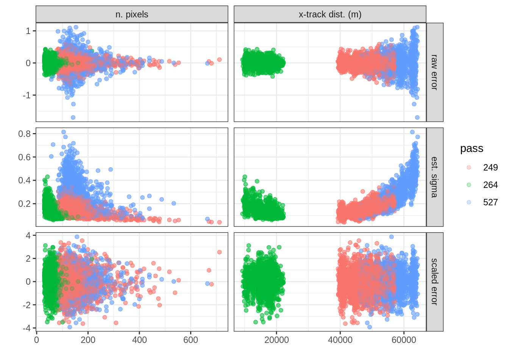
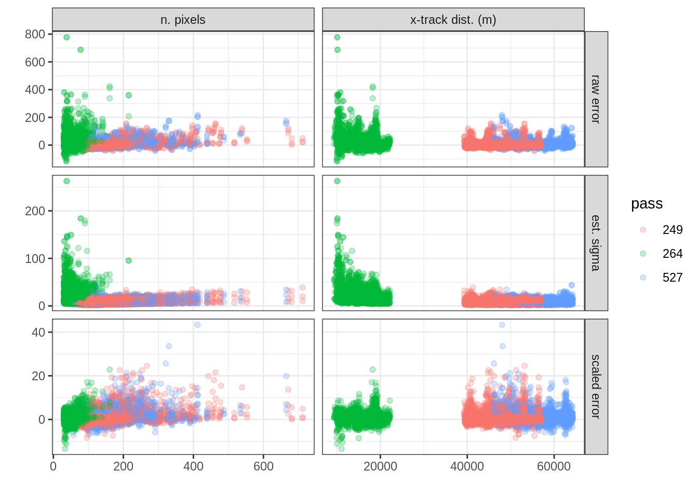
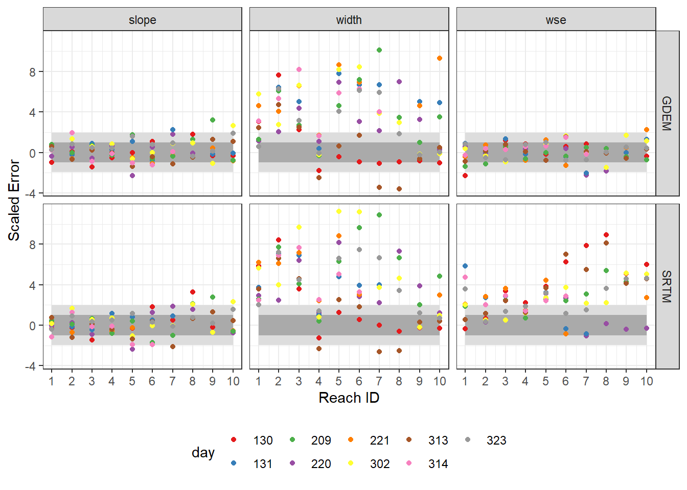
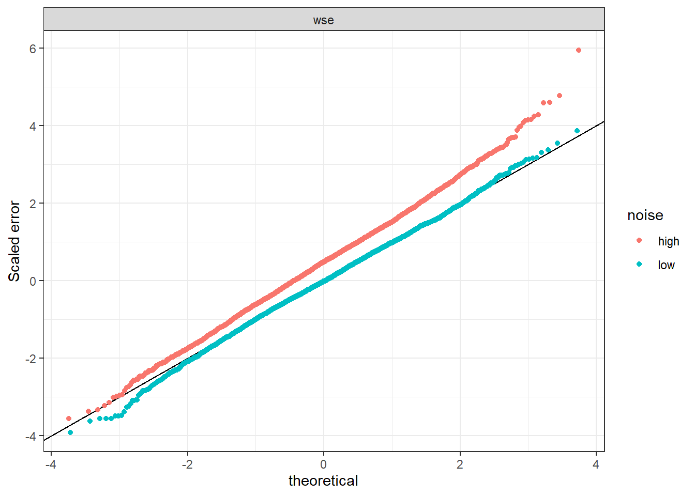
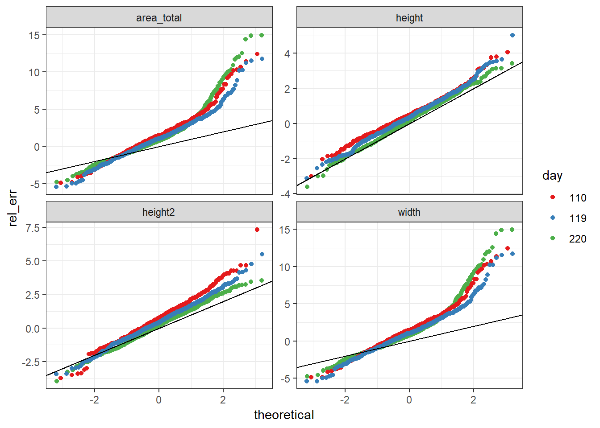
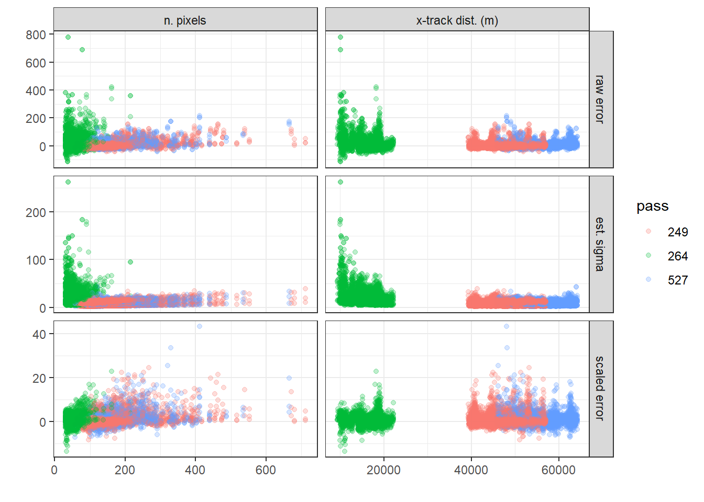
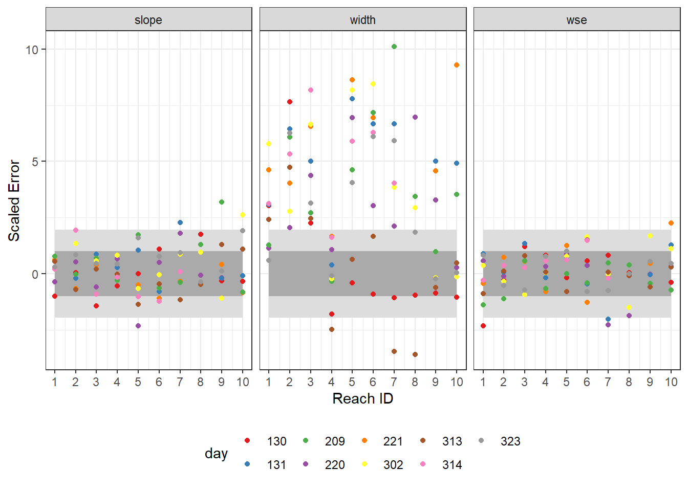

4 Results
- Height and slope (random component) errors are unbiased and well characterized by theoretical uncertainty model, following an approximate normal distribution.
- Adding unmodeled sources of error (layover, reference DEM error) results in height errors with RMSE approximately 20% larger than predicted by the model
- Width errors are well characterized by the uncertainty model in the middle percentiles of their distribution, but exhibit heavy tails (especially upper tail) not accounted for by the model.
- Different aggregation methods (pixel to node) exacerbate the heavy-tail behavior of the errors.
- At the reach scale this effect is exaggerated, resulting in errors with RMSE approximately 4.8 times larger than predicted by the model.
- The heavy-tailed behavior is more pronounced at higher flow conditions, do to added complexity of the river boundaries (sloughs, etc.)
- Error behavior as a function of pixel count and cross-track distance is well characterized by the uncertainty model.
- Some of the worst errors (outliers) are likely artifacts due to higher spatial resolutions of truth data, but it is not clear how much of the heavy tail behavior is attributable to this.
How well do uncertainty models characterize empirical errrors from simulated SWOT data? The answer varies by the variable measured, the data product (node or reach), the simulation characteristics, and the particularities of aggregation. The validation results are presented here separately for different variables and data products.
4.1 Node Results
Scaled node-level errors varied in behavior across the different simulations and variables. Height error RMSE was generally less than 1.3 for the realistic simulations–with most of this coming from bias–and less than 1.1 for the idealized simulations–which had negligible bias. Scaled width errors were more variable, with RMSE as high as 5x the model-predicted RMSE in the simple aggregation, 2x the predicted RMSE using composite aggregation, and 1.5x the predicted RMSE using water-fraction aggregation. The simulation parameters–idealized versus realistic–had only a minor effect on width error statistics.

Normal quantile-quantile (QQ) plots (Fig. ####) compare the emprical scaled errors to the theoretical \(N(0, 1)\) distribution (solid black line) for “water fraction” aggregtion and idealized simulation parameters. This distinguishes characteristics of the empirical error distribution including bias (vertical offset from 1:1 line), standard deviation (slope of points), and departures from normality, for instance heavy tails. Based on Fig. ####, the uncertainty model for height adequately characterized uncertainty across all simulation dates and for all parts of the distribution, with approximately standard normal scaled errors. In contrast, scaled width errors exhibit heavy-tailed distributions, especially at the upper tail, corresponding to errors that are much higher than would be expected if the errors were normally distributed. Despite this behavior in the tails, the middle of the scaled width error distribution was more well-behaved, with small but non-negligible bias depending on the simulation date.

In aggregate across all simulation days, distributions of scaled node height and width errors exhibit broadly the same characteristics as the same distributions for individual simulation days, but differ in severity by depending on the simulation parameters (Fig. ####). Width errors were closest in distribution to standard normal for the “water fraction” aggregation method, while using the composite method resulted in a heavier right-skew, and the simple mehtod had both a severely large upper tail as well as higher variance throughout the distribution (Fig. ####a). Height error distributions were unaffected by aggregation method, but adding simulation noise resulted in significant bias and slightly larger variance (Fig. ####b.

4.1.1 Factors affecting node-level errors and uncertainty
Node-level height errors vary as a function of the number of pixels per node and the distance from the node to the ground-track of the satellite. These effects are not independent, since pixel size is larger closer to the ground track, resulting in fewer pixels for a given node area. A node with fewer pixels will have less ability to average out the independent noise per pixel, resulting in larger node-level errors. Pixel height errors also increase farther from the ground-track, as height becomes increasingly sensitive to changes in interferometric phase with increasing cross-track distance. These two phenomena–pixel size and height-phase sensitivity–result in a U-shaped relationship between estimated height uncertainty and cross-track distance (Fig. ####d). Both of these effects are well characterized in the height uncertainty model, resulting in scaled errors lying generally between -2 and 2, as expected given unit standard deviation.
Width errors are also affected by pixel size, but are not otherwise affected by cross-track distance, resulting in the error and uncertainty profile shown in Fig. ####a-d. While the scaled width errors are not as well-behaved as the height errors and exceed 10 or 20 times the estimated \(1\sigma\) uncertainty, they exhibit no discernable patterns when plotted against pixel count or cross-track distance, suggesting that these effects are well characterized by the uncertainty model.


4.1.2 Worst offending nodes
4.2 Reach results
Scaled reach-level errors for height and slope measurements (Fig. ####) were apparently unbiased and fell generally between -2 and 2 in the idealized simulations, in keeping with expectations. Corresponding width errors were again less well-behaved, reaching as much as 10 times the \(1\sigma\) uncertainty estimate. Aggregation of width observations from node- to reach-level led to larger errors at the reach level, resulting from violations of underlying assumptions (zero bias, independence)
